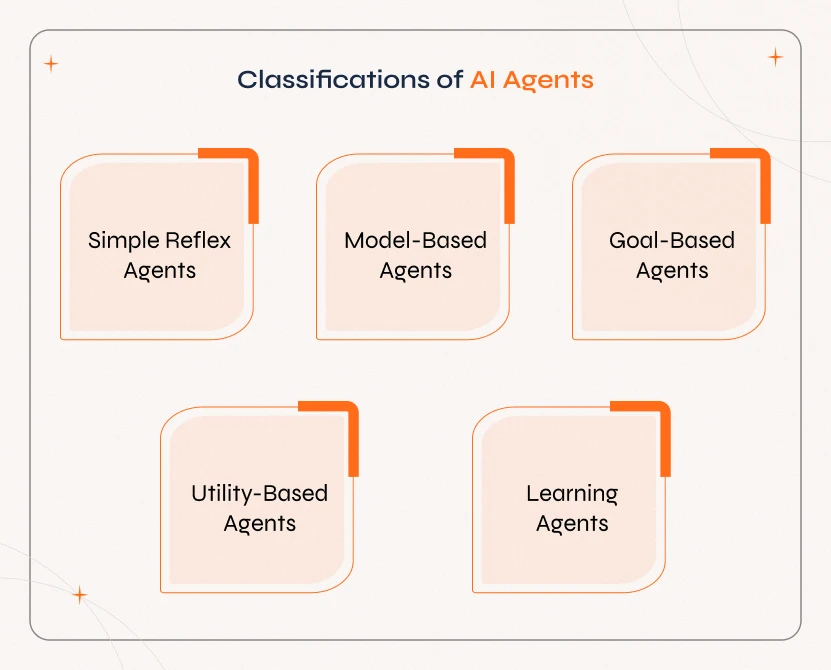
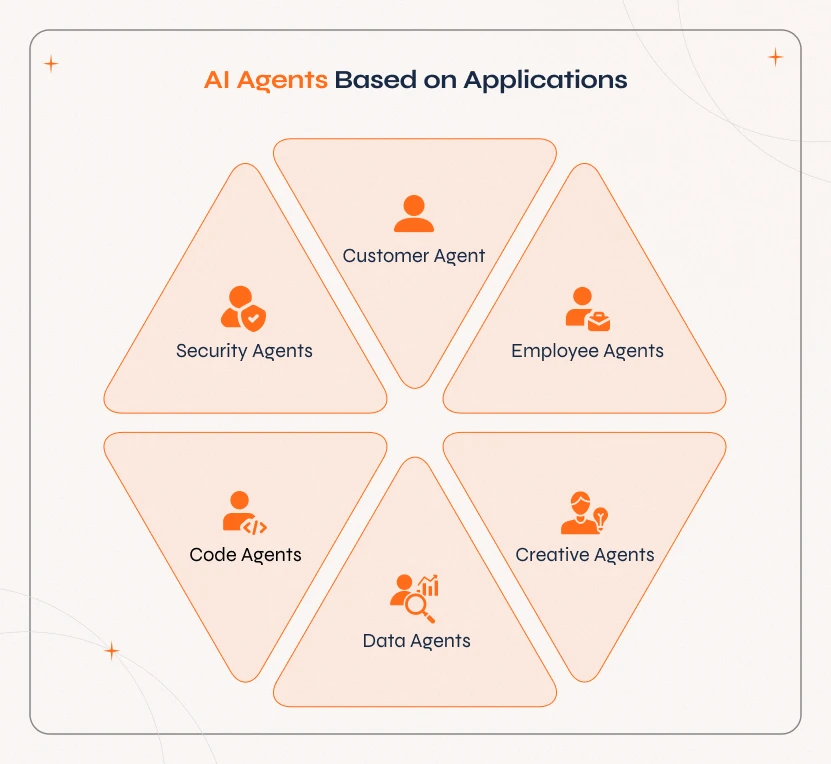
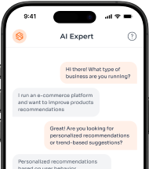
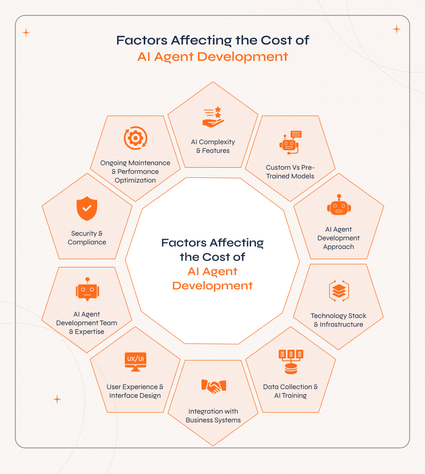
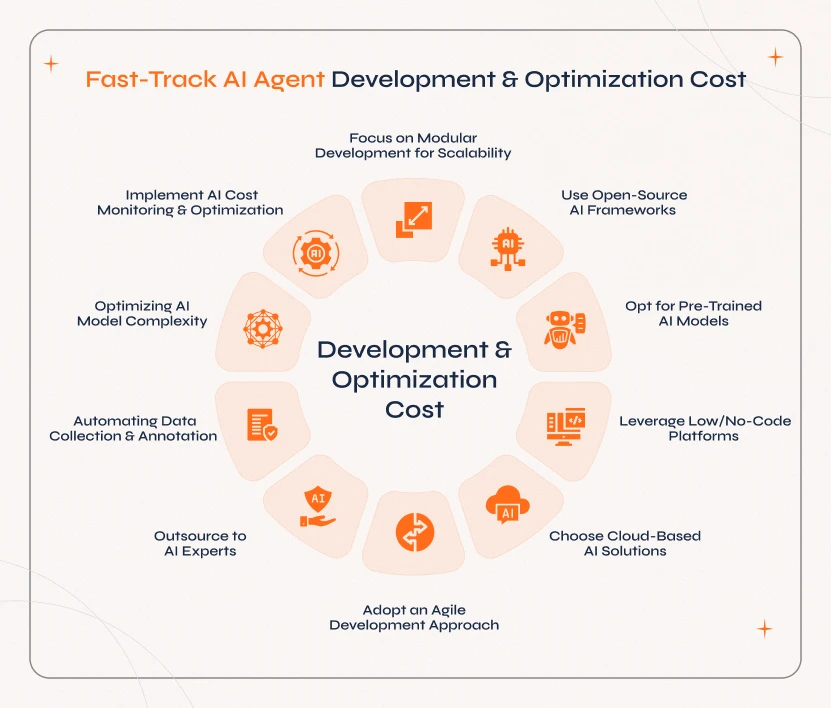
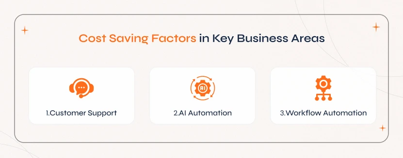

As automation and smart solutions are becoming essential for staying competitive, companies are increasingly investing in developing AI agents to stay ahead of market trends. However, the development cost of an AI agent is a crucial factor to be considered as businesses seek to leverage AI for enhanced efficiency, data-driven decision-making, and improved customer engagement.
Before jumping into AI agent development, understanding the AI agent development cost is crucial for budgeting, execution, and making informed investment decisions. The price tag varies significantly based on numerous factors, and that includes model complexity, integration needs, and maintenance requirements.
Here in this blog, we will break down the key factors influencing the development cost of AI agents, including cost breakdown, optimization, strategies, hidden costs associated, and more. With this, you can make informed investment decisions and plan your AI strategy efficiently.
What is an AI Agent, Its Types & Applications
An AI agent is a software program that observes the environment, processes information, and takes actions to achieve specific goals. AI agents rely on Machine Learning (ML) and Natural Language Processing (NLP) to interact intelligently with users or systems. They can operate independently or collaborate with humans and assist them in decision-making, communication, and problem-solving.
AI agents are designed to handle various tasks, and some of the key functionalities include data collection and processing, decision-making, problem-solving, automation & task execution, learning & adaptation, natural language understanding, etc.
Types of AI Agents
AI agents can be better classified based on cognitive abilities & learning approach, and functionality.

| Type of AI Agent | Description | Example |
|---|---|---|
| Simple Reflex Agents | Works based on predefined rules without considering past experiences. | Traffic lights that change based on a timer or sensor input |
| Model-Based Agents | Maintain an internal model to make decisions based on current and past inputs. | Smart thermostats that adjust temperature based on user habits |
| Goal-Based Agents | Analyze different actions to achieve specific goals. | Self-driving cars that find the safest routes by analysing the road conditions |
| Utility-Based Agents | Consider probabilities and success metrics to take the best possible action. | AI stock trading bots that find the market trends and predict profitable trades |
| Learning Agents | Continuously learn and adapt using machine learning and real-world data. | ChatGPT that refines responses based on user preferences |
AI Agents Based on Functionalities
1. Conversational AI Agent - It includes Chatbots, Virtual Assistants, and AI-powered Customer support tools.
2. Autonomous AI Agents - They operate independently and make independent decisions without human input.
3. Decision-Making AI Agents - They assist businesses in data-driven decision-making.
4. Hybrid AI Agents - A combination of multiple AI capabilities that do both conversational and autonomous tasks.
AI Agents Based on Applications
AI agents can be classified based on specific applications and tasks done across various domains. They are as follows:

1. Customer Agent
They handle customer engagement, like answering queries and providing personalized recommendations.
AI-powered customer agents work 24/7 and thus help customer service representatives with improved customer satisfaction and reduced response time.
2. Employee Agents
Assist employees with HR, workflow automation, scheduling meetings, etc.
With these agents, HR teams can automate repetitive tasks and boost productivity while human agents can indulge in more strategic activities.
3. Creative Agents
Generate text, images, videos, music, etc., for content creation and design.
With creative AI agents, content creators can produce high-quality, on-demand content for scalability and brand consistency.
4. Data Agents
Analyses and processes large datasets to find trends, insights, and predictions.
With data AI agents, business analysts can find actionable insights faster, which leads to better decisions and market adaptability.
5. Code Agents
Helps developers with coding, debugging, and optimizing software.
Developers can fast forward coding, automate debugging, and enhance software efficiency with less effort.
6. Security Agents
Detects cyber threats, prevent fraud, and improve data security.
IT teams can detect and neutralize threats with security agents. Thus ensuring robust data security and compliance.
Build Your Own AI Agent From Idea to Execution Fast Launch AI agents with expert development support.

Factors Affecting the Cost of AI Agent Development
Several factors affect the AI agent development cost, and understanding this helps businesses make informed decisions and optimize AI investments.

1. AI Complexity & Features
The AI agent development cost increases with the complexity and advanced functionalities. i.e., features like NLP, Deep Learning, Voice Recognition, Sentiment Analysis, and Automation require powerful algorithms, high-quality training data, and robust computing resources. All of these contribute to the AI agent’s development costs.
2. Custom Vs Pre-Trained Models
The development cost varies if you are choosing between custom-built AI agents and pre-trained models. i.e., Custom AI agents are built from scratch and require extensive development time and resources. However, the pre-trained models like GPT-4, BERT, and LLaMA are more cost-efficient as they are pre-trained, while they come with limitations in customization.
3. AI Agent Development Approach
The cost of AI agent development differs based on the development approaches available, technical expertise, and business needs. Here is how the different development approaches impact the AI agent development cost:
1. No-code AI Agent Development
It is the most budget-friendly approach that requires
minimal technical skills. Since it relies on pre-built tools, development cost and time are
significantly reduced. Hence, this approach is useful for startups and small businesses that need a
functional AI agent without technical complexities.
Platforms: Open AI GPT-4, Google Gemini, Bubble, Landbot, Chatfuel, Voiceflow, etc.
2. Low-code AI agent development
It is a mid-range cost approach with moderate
development costs, offering a few customization options and faster deployment. This approach is
suitable for businesses that require tailored solutions without extensive costs and time.
Platforms: Botpress, Outsystems, Mendix, Google Dialogflow, Microsoft Power Automate, etc.
3. Custom AI agent development
It is the most advanced approach that is entirely
customizable and scalable. This approach comes with high development costs, longer timelines, and
requires skilled technical expertise. Hence, it is best suitable for enterprises and organizations
that require a sophisticated AI agent with unique capabilities.
Platforms: TensorFlow & PyTorch, Open AI API, Kera, IBM Watson, Hugging Face, AWS, Google Cloud, Microsoft Azure, etc.
All of these development processes come with different levels of flexibility, scalability, and cost. Using no-code is the most cost-effective AI agent development, while low-code offers a balance, and custom development is the most expensive but supports scalability.
Check out the comparative analysis of no-code vs low-code vs custom AI agent development.
| Factor | No-Code | Low-Code | Custom Development |
|---|---|---|---|
| Development Cost | Low | Moderate | High |
| Time to Deploy | Fast (Days to Weeks) | Moderate (Weeks to Months) | Strategic & Scalable (Varies Based on Complexity) |
| Customization | Limited | Moderate | Fully Customizable |
| Technical Expertise Required |
Minimal | Some Coding Knowledge | Extensive Development Skills |
| Scalability | Low (Limited Features) | Moderate | High (Fully Scalable) |
| Integration Flexibility | Limited | Moderate | Full Integration Capabilities |
| Maintenance Cost | Low | Moderate | High (Ongoing Updates & Support) |
| Best For | Small Businesses, MVPs, Quick Prototyping | Startups, Mid-Sized Businesses | Enterprises, High-Performance AI Solutions |
4. Technology Stack & Infrastructure
The next factor associated with the AI agent development cost is the technology stack. Open-source frameworks are cost-effective, while Proprietary AI solutions offer advanced features and include high licensing fees.
Cloud-based deployment ensures scalability, and On-premise deployment provides control over data security. Choosing the right technological stack impacts performance, scalability, and long-term operational costs.
5. Data Collection & AI Training
AI agent development costs are influenced by data quality, processing, and training requirements. As AI models require large and high-quality datasets for optimal performance, data sourcing, preparation, annotation, labeling, and ongoing maintenance will be resource-intensive. However, investing in high-quality datasets ensures better AI performance.
6. Integration with Business Systems
Integrating AI agents with existing CRMs, ERPs, and third-party APIs adds to the development cost due to custom API development, data mapping, security protocols, etc. Besides, complex integration requires both time and expense. The other factor that decides the development cost includes whether the integration is out-of-the-box or custom-built.
7. User Experience & Interface Design
A well-designed User Experience (UX) and Conversational Interface (UI) ensure seamless interactions for chatbots and voice assistants. It uses advanced NLP, personalization, & sentiment analysis for better engagement.
Features like voice modulation, multilingual support, and adaptive responses not only enhance user experience but also add to the AI agent development costs.
8. AI Agent Development Team & Expertise
The cost of AI agent development depends on expertise and team. In-house AI teams require long-term investment and ensure dedicated expertise and control. Whereas Outsourcing to AI agent development firms provides flexibility, skilled professionals, and faster execution. Apart from this, freelancers may be cost-effective but lack long-term support.
9. Security & Compliance
Ensuring AI security and compliance involves implementing data encryption, bias detection, and user authentication to protect sensitive information. While compliance with regulations is essential to maintain privacy and prevent legal risks, these measures enhance AI reliability and add to additional investment in security frameworks, audits, and ongoing maintenance.
10. Ongoing Maintenance & Performance Optimization
It is vital to provide ongoing maintenance and optimization to keep AI agents efficient and accurate. This adds up to the AI agent development cost as it involves monitoring, debugging, performance tuning, and regular updates. Investing in optimization and real-time analytics maintains high-performing and scalable AI solutions while minimizing operational risks.
Cost Breakdown of AI Agents Based on Development Stages
AI agent development involves multiple stages, and they contribute to the overall cost. Take a look at the detailed breakdown of the key cost components:
1. Planning & Consultation
The initial phase involves market research, strategy development, and feasibility analysis to align AI agents with business objectives. The cost factors that contribute to the AI agent development in this phase include:
- The initial AI agent development costs are split into the requirement analysis that involves finding the business needs, target users, and expected results.
- The AI feasibility study is used to find whether AI integration is technically and financially possible, which affects the overall project investment.
- Tech stack selection determines the AI agent development cost, as companies have to choose between open-source frameworks or proprietary AI solutions.
- Regulatory compliance planning ensures adherence to data security laws and which again adds costs for security measures and legal compliance.
Cost Impact: In this initial phase, companies have to pay for consulting fees, research expenses, and strategic planning efforts that influence the total AI Agent development budget.
2. Development & Training
This is the most resource-intensive phase of AI agent development and involves designing, developing, and training AI models. The key cost factors include:
- Custom AI model development affects the cost based on whether the AI agent is built from scratch or fine-tuned via pre-trained models like GPT-4.
- Data acquisition & preprocessing add to development costs as they include collecting, cleaning, and labeling large datasets for accurate AI training.
- Machine learning model training requires a budget for computing power and expertise to train AI with supervised or unsupervised learning techniques.
- Performance testing & refinement affect the overall costs, and it ensures AI accuracy, removing biases, and optimizing results for better user interactions.
Cost Impact: The budget may vary depending on AI complexity, dataset size, and the computational resources needed to craft and train the AI model.
3. Integration & Deployment
As with the completion of AI model development, it is vital to seamlessly embed it into the existing business systems. The key cost drivers include:
- API & third-party integration impact the expenses of the development as they enable AI to connect with CRMs, ERPs, automation tools, etc.
- Cloud hosting & infrastructure add to the development cost based on whether AI is deployed on cloud services like AWS, Google Cloud, or on-premise servers.
- User interface development impacts the costs depending on the complexity of chatbot interfaces, voice assistants, or custom applications.
- Security & access control needs a budget for encryption, authentication, and compliance measures to protect user data and ensure privacy.
Cost Impact: The overall cost of the AI agent development during this phase varies based on the cloud hosting selection, API integration fees, and complexity of the system architecture.
4. Maintenance & Scalability
Performance monitoring of the AI agent involves analyzing the real-time interactions to spot errors and improve accuracy. Thus, this adds to the ongoing cost of AI agent development. The cost factors include:
- Model updates & retraining need fine-tuning AI with new datasets to improve learning and adaptability. This involves recurring investment in AI optimization.
- Bug fixes & security patches ensure AI remains secure and compliant with changing regulations. This adds up to the maintenance and legal compliance costs.
- Scaling AI for business growth includes expanding AI features to support larger audiences, languages, or complex tasks. It results in increased infrastructure and resource costs.
Cost Impact: The ongoing expenses for updates, monitoring tools, security measures, and scalability enhancements affect the long-term AI budget.
5. User Experience & Personalization
Crafting an AI agent that offers a smooth and natural interaction needs careful design and personalization. Based on the instructiveness and user-friendliness of the AI agent, the development cost increases. The key cost factors include:
- Generating AI responses using conversational flow design to be more human-like needs extensive testing and refinement, which adds to the development cost.
- Multilingual & localization support increases the development costs if the AI agent is required to communicate in multiple languages to support global audiences.
- Voice modulation & sentiment analysis involve further investment, and that helps AI to detect emotions, adjust its tone, and respond more naturally.
- Custom UI elements also contribute to costs based on the level of personalization. This includes designing avatars for chatbots, animations, or branded interfaces.
Cost Impact: The complexity of user experience directly impacts the overall development cost. i.e., the greater the personalization needs, the more resources and fine-tuning are involved.
6. AI Ethics & Bias Mitigation
It is vital to develop AI that is fair, transparent, and aligns with regulatory compliance. Thus, businesses should invest in ethical AI agent development practices to avoid biased responses and legal risks. The key cost drivers include:
- Bias detection & mitigation increase development costs as AI models developed should undergo a mandatory audit and be re-trained to eliminate potential biases from responses.
- Explainable AI (XAI) implementation involves additional resources that make AI decisions interpretable. This way, users and regulators can determine the result produced by the model.
- Regulatory compliance also adds to the budget as the AI agent is developed in such a way that it meets industry standards such as GDPR, HIPAA, or CCPA to protect user privacy.
Cost Impact: The investment in ethical AI and compliance measures increases the upfront costs. However, it reduces the risks and ensures long-term trust in AI solutions.
7. AI Scalability & Future-Proofing
AI agents must be designed with scalability in mind. i.e., it should grow with evolving business needs. Thus making it adaptable to future technologies and business expansions. It adds up the cost, and the key factors are as follows:
- Modular architecture design impacts the AI agent development costs. i.e., AI agents are built to be flexible, easily upgradeable, and integrated with new technologies.
- Edge AI & offline capabilities influence additional investment if AI needs to function on the platform with low latency and minimal cloud dependency.
- API & platform adaptability impact costs based on how effortlessly the AI agent can be connected with existing and future enterprise systems.
Cost Impact: Future-proofing strategies require a higher initial investment but prevent expensive repairs in the future and make AI solutions sustainable.
8. Customer Support & Training
When an AI agent is deployed, businesses must ensure smooth operation and usability by providing ongoing support and training. This adds to the long-term investment in AI agent development.
- End-user training & onboarding need budget allocation to train employees or customers on how to use AI solutions with ease.
- Including a dedicated AI support team impacts costs. It depends on whether a business requires ongoing support for troubleshooting, upgrades, and performance monitoring.
- Self-learning AI enablement increases development costs as reinforcement learning and feedback loops need to be integrated to let AI improve over time.
Cost Impact: By investing in support and training, AI delivers optimal performance. However, the level of assistance required can impact the overall costs.
Thus, the cost of AI agent development varies based on the project scope, features to be incorporated, integration approaches, and maintenance support provided. Most often, the initial investments are high while ensuring strategic planning, efficient model training, and proactive maintenance ensure long-term values, cost-effectiveness, and business growth.
Estimated Cost Range of AI Agent Development
The development cost of an AI agent depends on factors like scope, complexity, and scalability requirements. Check out the section below for a detailed breakdown of how much does it costs to build an AI agent based on the types of AI agents.
1. Basis AI Agent
A basic AI agent falls under a rule-based chatbot and has limited functionalities. In other words, these AI agents follow if-then logic without needing to learn or adapt.
With limited NLP support, it is primarily used to understand the context and provide responses. Consider AI agents that can deal with customer support, answering FAQs, lead generation, etc.
These are basic AI agents deployed on a single channel, like a website or messaging platform, that require minimal API integration. It lacks self-learning capability, and thus manual changes are required for improved responses.
The basic AI agent development cost is lower due to minimal AI training, simple AI chatbot development, and limited functionality. The budget may slightly increase if businesses opt for additional customization and integration support. These AI agents cost approximately between $10,000 - $30,000.
2. Advanced AI Agent
An advanced AI agent leverages machine learning (ML) to enhance interactions, automate processes, and handle more complex tasks. It relies on context-aware natural language processing to understand the user intent and respond in a natural tone.
These ML models analyze user behavior and adapt to responses over time. They support multiple channels such as websites, mobile apps, messaging platforms, voice assistants, etc. To improve customer engagement, it uses sentiment analysis and offers personalized responses. Advanced AI agents can integrate with CRM, ERP, cloud services, automation tools, and help desk tools.
The cost of advanced AI agent development depends on the level of AI customization, integration count, and required data processing power. Additionally, cloud-based deployment and real-time analytics can impact the budget. The advanced AI agent cost may range approximately between $10,000 - $150,000.
3. Enterprise AI Agent
An enterprise AI agent is the best for large-scale automation, real-time learning, and advanced decision-making across multiple business functions.
These types of AI agents improve from previous interactions and adapt their responses dynamically over time. They can process text, audio, and video and provide a seamless user experience. The best part is they come with enterprise-grade security and compliance features deployed on both cloud and on-premise systems. Those custom AI models tailored for specific industries will offer highly intelligent and domain-specific solutions. They are used in banking, healthcare, e-commerce, and customer service applications as they handle a high volume of interactions.
The cost of these AI agents is higher than all as they need advanced computational power, large training datasets, and security measures. The development cost may start from $50,000 and exceed that based on the functionality.
Businesses should fix their goals and budget constraints before choosing the right AI solution. It is noted that basic AI agents offer cost-effective automation, and investing in advanced or enterprise-level AI delivers long-term efficiency and competitive advantage.
Estimated Cost Range of AI Agent Development
Discover Your AI Agent Budget Uncover cost ranges to plan smarter, faster builds.
AI Agent Development Timeline & Cost Optimization
AI agent development involves multiple phases, and each impacts the overall cost and timeline. Businesses aiming to maintain a balance between speed, cost, and performance should consider how each stage makes up the total investment.
Development Phases & Timeline
The total timeframe to develop a fully functional AI agent will take approximately 8-9 months. The breakdown is tabulated for your reference:
| Phase | Timeframe | Cost Impact | Key Activities |
|---|---|---|---|
| Planning & Research | 2-4 weeks | 10-15% of total budget | Define objectives, feasibility study, cost estimation, tech stack selection |
| AI Model Development | 2-6 months | 30-50% of total budget | Data collection, AI model training, feature engineering, algorithm selection |
| Testing & Iteration | 4-8 weeks | 15-20% of total budget | Fine-tuning, AI performance validation, bias & error correction |
| Deployment & Integration | 3-6 weeks | 10-15% of total budget | Cloud/on-premise setup, API integration, security implementation |
| Maintenance & Optimization | Ongoing | 15-25% annually | Model updates, bug fixes, system scaling, retraining with new data |
How to Fast-Track AI Agent Development & Optimize Costs
Developing AI agents can be expensive, and businesses need to take careful consideration to optimize the development cost without compromising on the quality. Check out how to fast-track AI agent development and reduce development expenses:

1. Use Open-Source AI Frameworks
The best way to optimize development costs is to
leverage open-source AI frameworks instead of building AI models from scratch. The popular frameworks
like TensorFlow, PyTorch, Rasa, etc., come with pre-built machine learning libraries and thus reduce
development time and costs.
Additionally, businesses can leverage Llama by Meta AI, a powerful open-source AI model that offers greater control over data security, compliance, efficiency, and cost savings. These tools also have strong community support, with which fixing issues and making improvements is fast-paced.
2. Opt for Pre-Trained AI Models
Training AI models from scratch requires extensive
datasets, high computational power, and specialized expertise. Instead, businesses can opt for
pre-trained models like GPT, Google Dialogflow, and BERT to cut down the training time and cost to
reduce overall development expenses.
Besides, Llama is an open-source alternative that any business can use to save time and reduce costs while still achieving high AI performance. It is a great alternative to GPT and offers customization, flexibility, efficiency, and privacy-friendly. Additionally, businesses can still choose customization for industry-specific needs.
3. Leverage Low/No-Code Platforms
Instead of relying on custom AI agent development,
businesses can choose between low-code or no-code platforms to considerably reduce and optimize the AI
agent development cost. These approaches are useful for businesses with minimal or low budgets or
those in the early stage of AI adoption. Both platforms have pre-built templates with drag-and-drop
functionalities, which reduces labor costs and development time.
4. Choose Cloud-Based AI Solutions
Setting up on-premises AI infrastructure requires
significant investment in hardware, maintenance, and security. Businesses can opt for cloud-based
AI solutions such as AWS, Google Cloud, Microsoft Azure, etc., as they cost less. In other
words, businesses need to pay for what they use and thus can avoid upfront infrastructure costs.
5. Adopt an Agile Development Approach
Businesses can opt for a Minimal Viable Product
(MVP) instead of investing heavily in full-scale AI agent development. With MVP, it is easy to test AI
capabilities, gather user feedback, and make necessary improvements before scaling up. Thus, an
iterative approach is the best way to optimize the development cost of AI agents.
6. Outsource to AI Experts
Developing AI solutions by hiring in-house AI teams is costly
as it involves salaries, tools, and ongoing training. Hence, partnering with an experienced AI Agent
development company or outsourcing specific tasks will considerably reduce the development cost of AI
agents while accessing skilled AI professionals. They can even suggest optimized methods to minimize
the AI agent pricing.
7. Automating Data Collection & Annotation
Collecting and labeling data manually adds to
the expenses of AI agent development. Also, it takes up time, and thus businesses can consider
automating data using data annotation tools. This way, they can leverage synthetic data generation
techniques to reduce costs while maintaining the quality of the data.
8. Optimizing AI Model Complexity
Developing highly complex AI models requires more
computational power and a longer time to train. Upon optimizing the AI model architecture based on
actual business needs, businesses can cut down costs considerably without compromising on performance.
So, a smaller and more efficient model works great instead of relying on a large deep learning
network.
9. Implement AI Cost Monitoring & Optimization
By using cloud-based AI services,
businesses can witness cost fluctuations based on usage. By tracking AI workloads and optimizing model
deployment, businesses can optimize model deployment and avoid unnecessary computing expenses. To
control resource consumption, it is better to use auto-scaling and serverless AI solutions.
10. Focus on Modular Development for Scalability
Businesses can opt for modular AI
architecture and build AI agents with only the essential features at the beginning and
then add advanced features at a later point. This way, businesses can ensure initial cost savings and
a flexible expansion path when the business evolves.
Reducing the development cost of AI agents requires leveraging open-source tools, cloud-based solutions, automation, and a well-defined development plan. Upon focusing on efficiency at every stage, businesses can achieve high-performing AI agents built under budget.
Hidden Costs to Watch Out For in AI Agent Development
AI agent development comes with unexpected expenses that businesses must account for. Hidden costs, when ignored, result in budget overruns and delays in deployment. Check out the key areas where hidden costs may arise:
1. Data Collection & Annotation Costs
AI performance results depend on the datasets it
is trained with. It often requires collecting, cleaning, and annotating from the larger datasets. If
there is no in-house data, then businesses need to buy datasets, use data labeling services, or invest
in synthetic data generation that adds to the overall development costs.
2. Model Retraining & Performance Tuning Expenses
AI models require frequent updates to
stay accurate and relevant. It includes periodic training with fresh data, fine-tuning model
parameters, and improving response accuracy in real-time. Thus, these require higher computational
resources and expert involvement, which increases long-term expenses.
3. Integration Challenges & API Costs
Embedding an AI agent into existing business
systems like CRMs, ERPs, and Customer service platforms requires complex API integrations. Besides,
third-party APIs like payment gateways, NLP services, cloud computing, etc., have subscription fees,
licensing costs, or usage-based pricing that add to the AI agent development.
4. Compliance Costs for Regulated Industries
Industries such as healthcare, finance,
legal services, etc., should comply with data protection regulations like GDPR, HIPAA, PCI-DSS, etc.
Thus, ensuring compliance involves hidden investment in encryption, secure data storage, security
audits, legal consultations, etc.
ROI Analysis of AI Agent Development
Businesses investing in AI agents yield long-term financial benefits, and thus understanding the ROI (return on investment) is crucial to find the development costs and measure the value AI brings to operations.
“ROI Calculation Formula: ROI (%) = [(Annual Cost Savings + Revenue Gains - AI Investment Cost) / AI Investment Cost] × 100.”
The examples below demonstrate the potential for AI agents to deliver exceptional returns, emphasizing the importance of strategic investment in AI agents.
Example 1:
Consider a business that invests $30,000 in developing an AI agent to
automate customer support tasks. This AI agent helps increase customer satisfaction, reduce support
response time, and cut down labor costs.
- Annual Cost Savings - $15,000 (from reduced customer service labor costs)
- Revenue Gains - $40,000 (from improved customer retention and higher sales conversion)
- AI Investment Cost: $30,000
ROI Calculation, ROI (%) = [($15,000 + $40,000 - $30,00) / $30,000]*100
ROI (%) = [25,000/30,000] * 100 = 83.33%
Result: The company sees an 83.33% ROI, meaning they recover their investment and get an additional 83.33% return on it in one year.
Example 2:
A retail company invests $100,000 in developing an AI agent for inventory
management. The agent helps optimize stock levels, reducing excess inventory and minimizing stockouts.
- Annual Cost Savings: $40,000 (from reduced stock holding costs and improved inventory turnover)
- Revenue Gains: $90,000 (from reduced stockouts and improved sales)
- AI Investment Cost: $100,000
ROI Calculation: [($40,000 + $90,000 - $100,00) / $100,000]*100
ROI (%) = [30,000/100,000] * 100 = 30%
Result: The company gets a 30% ROI, recovering its investment with an additional 30% return in one year.
How Long It Takes for AI Agent to Break Even
The breakeven period of AI agent development depends on development costs, operational savings, and revenue generation. The faster AI agents enhance productivity or reduce operational costs, the sooner businesses can get back their investment. On average, businesses can expect
1. 6-18 months for AI agents that offer customer support and internal automation.
2. 12-24 months for AI agents that need advanced machine learning models and personalized interactions.
3. 24+ months for highly complex AI solutions with deep learning and large-scale data processing.
Potential Cost Savings in Key Business Areas
AI agents can save costs significantly by automating repetitive tasks and optimizing processes. Key areas include

1. Customer Support
Relying on human agents can be reduced, and this saves around
30-50%. AI chatbots and virtual assistants can handle 60-80% of repeated queries, and thus human
resources can be allocated for more complex tasks.
2. AI Automation
Labor costs can be cut down by 20-40% in marketing, sales, and HR
management. Similarly, AI-powered decision-making improves efficiency and may lead to a productivity
increase of 15-25%.
3. Workflow Automation
Manual processing time gets reduced by 40-70% in finance,
healthcare, logistics, etc. AI solutions can automate data entry, document processing, compliance
checks, etc., and reduce human errors.
With these cost-optimization measures, businesses can improve efficiency and accelerate ROI timelines.
Why Choose Sparkout Tech for AI Agent Development?
Sparkout Tech is one of the leading AI agent development companies to craft cutting-edge AI agents that drive efficiency, reduce operational costs, and enhance user engagement. No matter if you are looking to automate customer interactions, optimize business operations, or deploy a fully autonomous AI system, our solutions are designed to provide maximum impact.
With proven expertise in AI and automation, Sparkout Tech has delivered high-quality AI agents for businesses across industries. Our team consists of AI engineers, data scientists, and machine learning experts who ensure the AI solution is intelligent, efficient, and reliable.
We at Sparkout Tech focus on delivering AI Agent solutions that offer high ROI and remain scalable for future growth. You can choose between flexible pricing models, cloud and edge AI solutions, or AI-as-a-Service from us to get it delivered.
When you choose Sparkout Tech for AI agent development, you are partnering with an industry leader in AI innovation. Whether you need a chatbot, virtual assistant, predictive analytics system, or fully autonomous AI agent, we deliver solutions that bring in measurable ROI.
Yokesh Sankar, COO at SparkoutTech